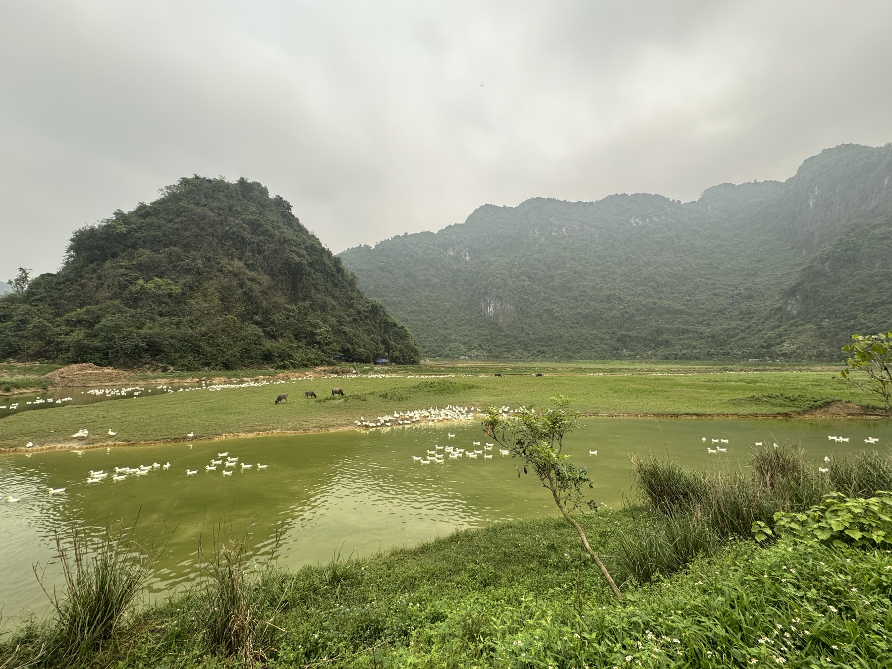
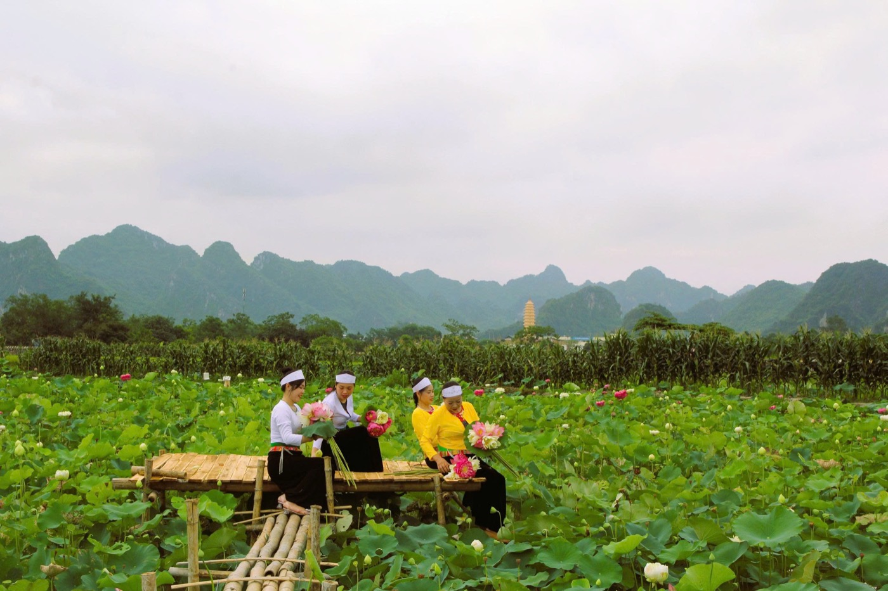
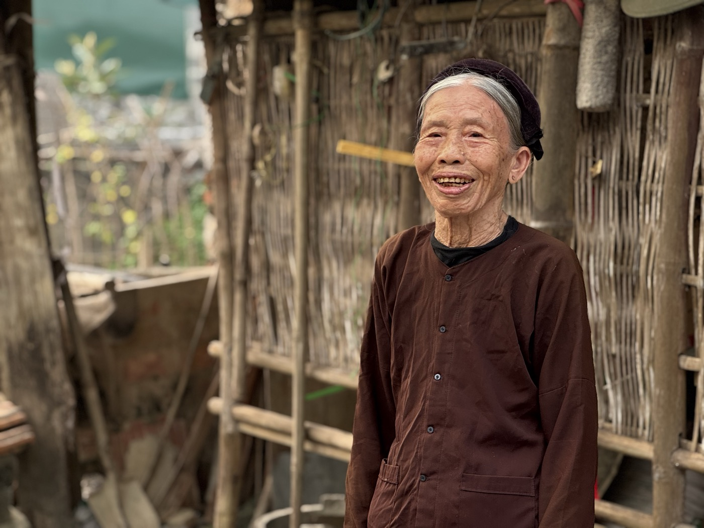
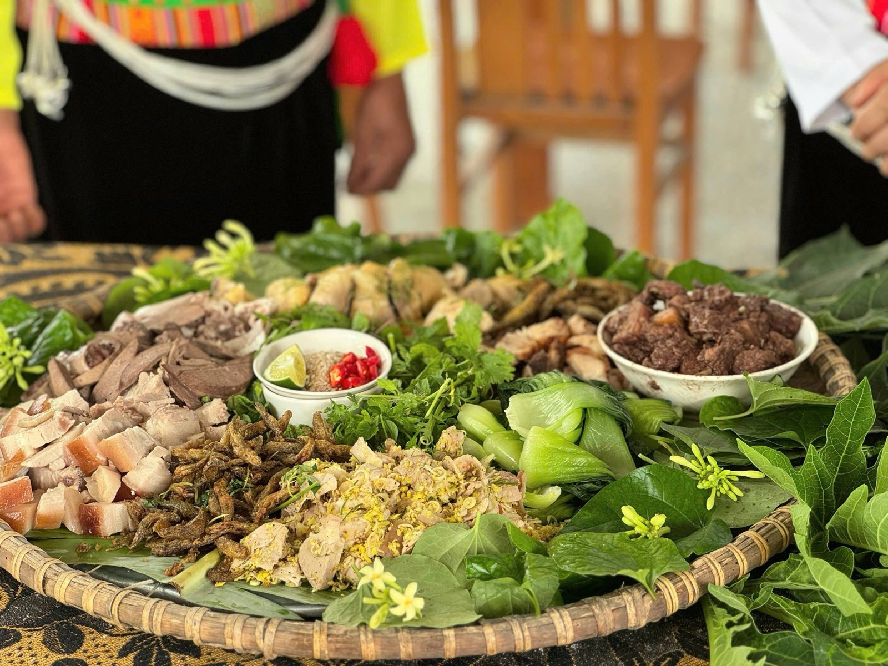
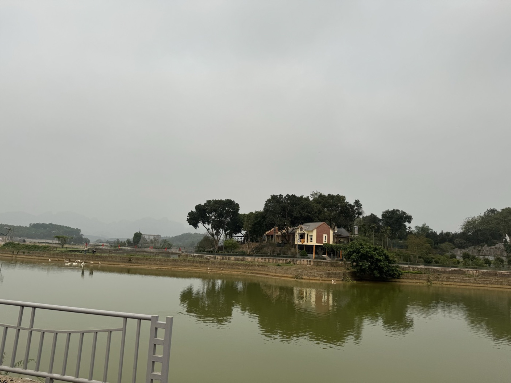
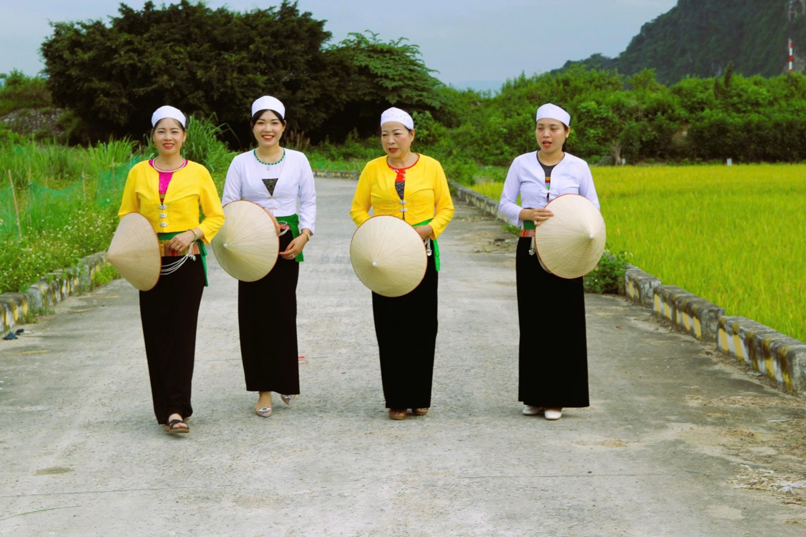
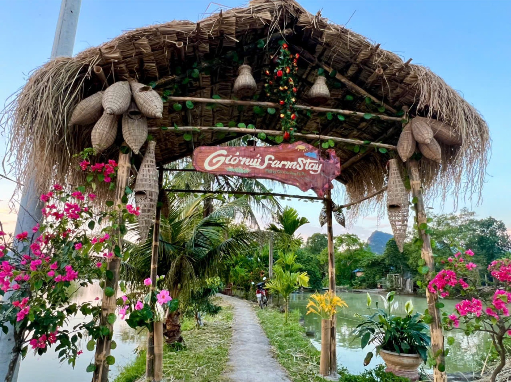
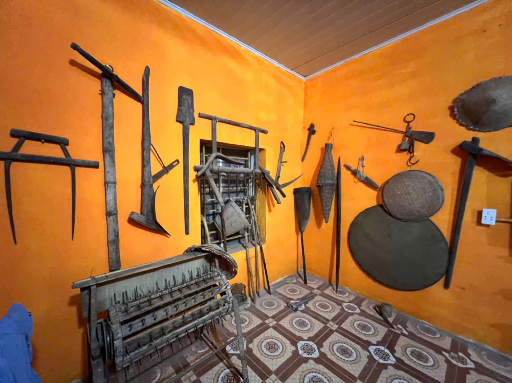
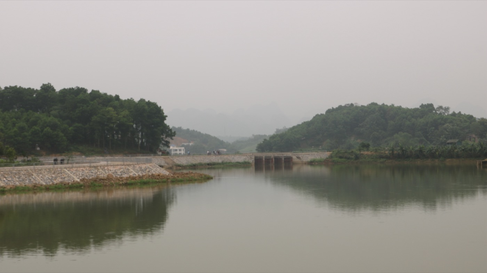
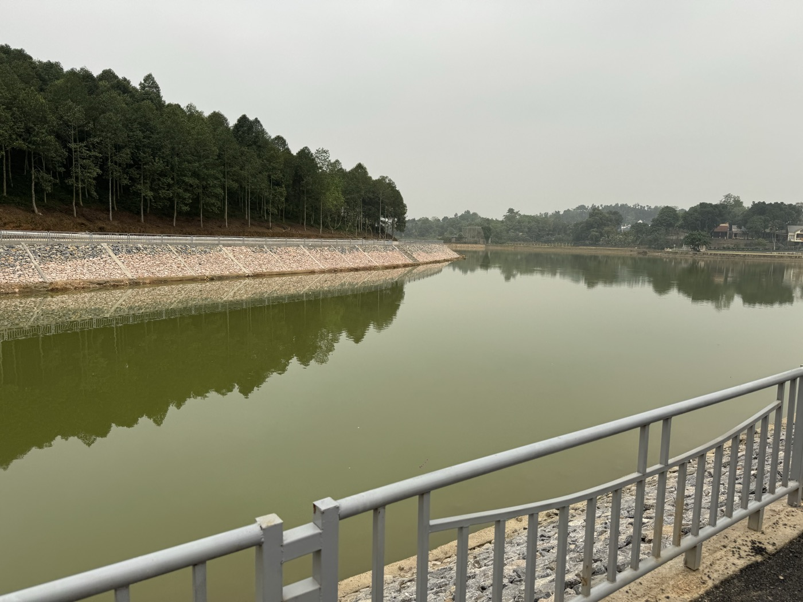

Có những nơi người ta đến để check-in. Mường Cốc là nơi người ta đến để thở. Bỏ lại còi xe và màn hình sáng — ở đây, bình yên không còn xa xỉ, mà là thứ bạn chạm được bằng tay.Some places you visit to check in. Muong Coc is a place you come to breathe. Leave the traffic and the screens behind — here, calm is no longer a luxury, but something you can touch.Il y a des lieux où l'on vient pour se montrer. Mường Cốc est un lieu où l'on vient pour respirer. Laissez le bruit et les écrans — ici, la quiétude n'est plus un luxe, mais une chose que l'on touche.

Mường Cốc trải ra như một bức tranh thuỷ mặc: núi đá vôi che chở phía sau, thung lũng xanh mướt phía trước, mặt hồ Bai Bó lấp lánh dưới nắng sớm. Mùa hạ, những đầm sen nở rộ ướp cả không gian bằng hương thơm dịu, hồng phớt đến tận chân đồi.
Đi sâu thêm là triền đồi sim tím vào mùa, cánh đồng lúa đổi màu theo vụ, lối mòn dẫn vào rừng hoang sơ. Mỗi mùa, Mường Cốc khoác một tấm áo khác — mùa nào cũng đẹp nao lòng.
Muong Coc unfolds like an ink-wash painting: limestone peaks sheltering behind, a green valley ahead, and Bai Bo Lake glinting in the morning light. In summer, lotus ponds bloom and scent the air, blushing pink to the foot of the hills.
Deeper in lie rose-myrtle hills in season, rice fields shifting colour with each crop, and trails into untouched forest. Each season Muong Coc wears a different robe — and every one is breathtaking.
Mường Cốc se déploie comme une peinture à l'encre : pics calcaires en toile de fond, vallée verdoyante devant, lac Bai Bo scintillant au matin. L'été, les étangs de lotus fleurissent et parfument l'air, rosissant jusqu'au pied des collines.
Plus loin, les collines de myrte en saison, les rizières changeantes, les sentiers vers la forêt sauvage. Chaque saison, Mường Cốc revêt une autre robe — toutes à couper le souffle.

Ở Mường Cốc, lòng hiếu khách không phải dịch vụ — đó là nếp sống. Bạn được mời lên nhà sàn ấm mùi khói bếp, nghe chuyện bản làng trao qua bao thế hệ; đêm xuống, tiếng cồng chiêng mời bạn vào vòng xoè như người thân trở về.
Văn hoá Mường nơi đây vẫn thật: lời Mo Mường trầm ấm, bài thuốc hái từ rừng, mâm cơm nấu bằng cả tấm lòng. Bạn không xem một màn trình diễn — bạn sống một ngày làm người Mường. Và khi muốn lắng lại, những mái chùa, ngôi đình cổ — Chùa Phú Cốc, Đình Phú Cốc, Đền Cây Thợi, Đền Ái Nàng — mở rộng vòng tay.
Here, hospitality is not a service — it is a way of life. You are welcomed up to a stilt house warm with hearth smoke, told stories passed down for generations; at nightfall the gongs invite you into the dance like a returning friend.
Muong culture stays real: the deep chant of Mo Muong, herbal remedies from the forest, meals cooked with whole hearts. You don't watch a show — you live a day as a Muong. And to grow still, the old pagodas and communal houses — Phu Coc Pagoda, Phu Coc Dinh, Cay Thoi and Ai Nang Temples — open their arms.
Ici, l'hospitalité n'est pas un service — c'est un art de vivre. On vous invite dans une maison sur pilotis tiède de fumée, on vous conte le village transmis depuis des générations ; le soir, les gongs vous invitent à la danse comme un ami de retour.
La culture Mường y reste vraie : le chant grave du Mo Mường, les remèdes de la forêt, les repas faits de tout cœur. Vous ne regardez pas un spectacle — vous vivez une journée en Mường. Et pour vous recueillir, les pagodes et maisons communales anciennes — Phú Cốc, Cây Thợi, Ái Nàng — vous ouvrent les bras.

Thay vì bày trên đĩa, người Mường bày món trực tiếp trên lá chuối rừng hơ lửa thơm — nét ẩm thực sơ khai, độc đáo, chứa ân tình của người Mường với đất, trời, rừng, núi.
Món tiêu biểu: lợn thui luộc, chả cuốn lá bưởi, cá ốt đồ, gà nấu măng chua, rau rừng chấm mẻ, cơm lam — chấm cùng muối hạt dổi “linh hồn” của mâm cỗ, nhâm nhi rượu cần bên tiếng cồng chiêng. Khách được mời cùng gói chả, hơ lá, giã muối — đúng tinh thần “khách cùng tham gia”.
Instead of plates, the Muong serve dishes directly on fire-warmed wild banana leaves — a primal, distinctive cuisine carrying the people's bond with earth, sky and forest.
Signature dishes: singed boiled pork, pomelo-leaf rolls, steamed stream fish, sour-bamboo chicken, wild greens with fermented mẻ dip, bamboo-tube rice — all dipped in dổi-seed salt, the soul of the feast, with rice wine by the sound of gongs. Guests join in — true "guests take part".
Au lieu d'assiettes, les Mường servent les plats sur des feuilles de bananier sauvage passées au feu — une cuisine primitive et singulière, liée à la terre, au ciel et à la forêt.
Plats phares : porc grillé bouilli, rouleaux en feuille de pamplemoussier, poisson de ruisseau vapeur, poulet au bambou aigre, herbes sauvages au mẻ fermenté, riz en bambou — trempés dans le sel de graines de dổi, l'âme du festin, avec l'alcool de riz au son des gongs. Les hôtes participent.
Mường Cốc không phải nơi để ngắm rồi đi — đây là nơi để chạm, để làm, để cười cùng người bản. Từ Tourism Hub Đồi Dùng, chọn cho mình một ngày đầy kỷ niệm.Muong Coc is not a place to glance and leave — it is a place to touch, to do, to laugh with locals. From the Doi Dung Tourism Hub, pick yourself a day full of memories.Mường Cốc n'est pas un lieu où l'on regarde et l'on part — c'est un lieu où l'on touche, où l'on fait, où l'on rit avec les habitants. Depuis le Tourism Hub de Đồi Dùng, choisissez votre journée.





Mường Cốc mời bạn đến như một người bạn biết trân trọng. Chúng tôi giữ cho bạn một bản làng nguyên vẹn — không dàn dựng, không màu mè. Đổi lại, xin bạn cùng giữ gìn: đến để lắng nghe chứ không chỉ chụp ảnh, mang theo bình nước riêng, bước nhẹ trên lối mòn, nói khẽ trước mái đền. Khi rời đi, bạn mang theo kỷ niệm — và để lại lời cảm ơn.Muong Coc welcomes you as a friend who knows how to cherish. We keep the village whole for you — unstaged, unembellished. In return, help us protect it: come to listen not just to photograph, bring your own bottle, tread softly on the trails, speak gently before the temples. When you leave, take memories — and leave a thank-you.Mường Cốc vous accueille comme un ami qui sait chérir. Nous gardons le village intact — sans mise en scène. En retour, aidez-nous à le préserver : venez écouter et pas seulement photographier, apportez votre gourde, marchez doucement, parlez bas devant les temples. En partant, emportez des souvenirs — et laissez un merci.
